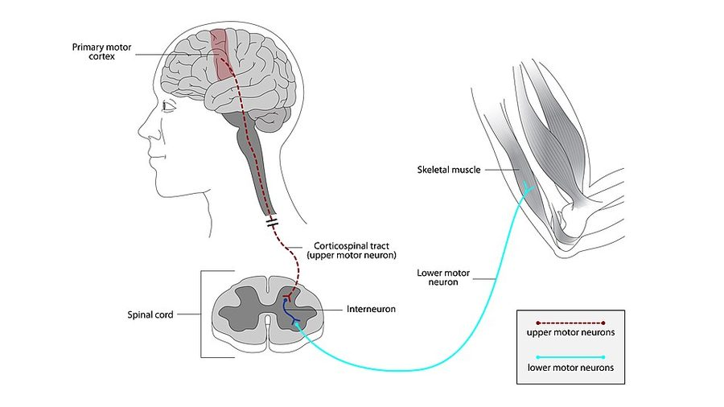

Información divulgativa. No sustituye la valoración de un profesional sanitario ni el consejo genético.


En pocas palabras
| Gen | SMN1, cromosoma 5 (modificado por SMN2) |
| Herencia | Autosómica recesiva |
| Frecuencia | Alrededor de 1 de cada 10.000 recién nacidos |
| Portadores | 1 de cada 40-50 personas |
| Tratamientos | Nusinersén, onasemnogén abeparvovec, risdiplam |
| Clave | Tratar antes de los síntomas: cribado neonatal |
Qué es
La atrofia muscular espinal (AME) es una enfermedad hereditaria en la que se pierden poco a poco las motoneuronas de la médula espinal, las células nerviosas que transmiten a los músculos la orden de contraerse. Sin ellas, los músculos se debilitan y se atrofian, sobre todo los más próximos al tronco (caderas, hombros) y los respiratorios. La sensibilidad y la inteligencia no se afectan: los niños con AME suelen ser especialmente despiertos y comunicativos.
Hasta hace pocos años era la causa genética más frecuente de muerte en lactantes.
Tipos
La AME se clasifica según la edad de inicio y la máxima capacidad motora que se alcanza sin tratamiento:
| Tipo | Inicio | Evolución sin tratamiento |
|---|---|---|
| 0 | Antes de nacer | Muy grave desde el nacimiento |
| 1 (Werdnig-Hoffmann) | Antes de los 6 meses | No llegan a sentarse; la mayoría fallecía antes de los 2 años por insuficiencia respiratoria |
| 2 | 6-18 meses | Se sientan pero no caminan; escoliosis y problemas respiratorios |
| 3 (Kugelberg-Welander) | Después de los 18 meses | Caminan, aunque muchos pierden la marcha con los años |
| 4 | Edad adulta | Debilidad leve |
El tipo 1 supone más de la mitad de los casos. Los primeros signos son un bebé "blando" (hipotónico), que mueve poco las piernas, no sostiene la cabeza y respira con el abdomen.
Causa genética
Se debe a la falta del gen SMN1 (survival motor neuron 1), en el cromosoma 5. En alrededor del 95 % de los casos falta un trozo del gen en las dos copias (una deleción del exón 7). El gen fabrica la proteína SMN, que todas las células necesitan, pero las motoneuronas son especialmente sensibles a su falta.
El detalle clave es que existe un gen casi gemelo, SMN2, que difiere en una sola letra. Por ese cambio, la mayor parte del ARN de SMN2 se "recorta" mal (pierde el exón 7) y solo alrededor de un 10 % produce proteína funcional. Las personas tienen entre una y ocho copias de SMN2: cuantas más copias, más proteína y más leve suele ser la enfermedad. Los bebés con dos copias suelen tener el tipo 1; con tres o cuatro, formas más leves.
Esa "rueda de repuesto" es la que aprovechan dos de los tres tratamientos.
Herencia
Es autosómica recesiva: hacen falta dos copias alteradas de SMN1. Alrededor de 1 de cada 40 a 50 personas es portadora sin saberlo. Si ambos miembros de una pareja lo son, cada embarazo tiene un 25 % de probabilidad de hijo afectado. Un 2 % de los casos se debe a una variante nueva en uno de los progenitores.
Un detalle técnico importante: alrededor de un 4 % de los portadores tiene dos copias de SMN1 en el mismo cromosoma y ninguna en el otro, por lo que la prueba estándar de portadores, que cuenta copias, puede salir normal. Por eso un resultado negativo reduce mucho el riesgo, pero no lo elimina.
Tres tratamientos en pocos años
En menos de cinco años, la AME pasó de no tener tratamiento a tener tres, todos basados en la genética:
- Nusinersén (aprobado en Europa en 2017): un oligonucleótido antisentido, un fragmento corto de ARN que se une al ARN de SMN2 y hace que se recorte bien, de modo que produzca más proteína completa. Se inyecta en el líquido cefalorraquídeo mediante punción lumbar cuatro veces el primer año y después cada cuatro meses.
- Onasemnogén abeparvovec (aprobado en Europa en 2020): terapia génica que introduce una copia funcional de SMN1 en las motoneuronas con un virus modificado (AAV9), en una sola infusión intravenosa. Se usa sobre todo en bebés pequeños. Requiere corticoides y vigilancia del hígado.
- Risdiplam (aprobado en Europa en 2021): una molécula que se toma por boca a diario y también corrige el recorte del ARN de SMN2. Llega a todo el cuerpo.
Los tres frenan la enfermedad, pero no recuperan las motoneuronas que ya se han perdido. Se investigan combinaciones, nuevas formas de administración, como una versión de la terapia génica que se inyecta en el líquido cefalorraquídeo para niños mayores, y fármacos que mejoran la fuerza del músculo.
Junto al tratamiento farmacológico siguen siendo esenciales la fisioterapia, el soporte respiratorio (asistencia para toser, ventilación no invasiva), la nutrición y el control de la escoliosis, en unidades de enfermedades neuromusculares.
Por qué el tiempo importa
Un bebé con AME tipo 1 puede perder la mayor parte de sus motoneuronas en los primeros meses de vida. Los ensayos con bebés tratados antes de tener síntomas, diagnosticados por tener un hermano afectado o por cribado neonatal, mostraron resultados espectaculares: la mayoría consiguió sentarse y caminar de forma independiente, algo impensable sin tratamiento.
Por eso la AME se está incorporando a la prueba del talón en muchos países. La prueba detecta la ausencia del exón 7 de SMN1 en la misma gota de sangre seca que se usa para otras enfermedades. En España, varias comunidades autónomas ya la incluyen y está prevista su extensión a todo el Sistema Nacional de Salud.
Diagnóstico
- Estudio genético de SMN1 (deleción en ambas copias) y recuento de copias de SMN2, que orienta el pronóstico y el tratamiento.
- El electromiograma y la biopsia muscular, que se usaban antes, hoy apenas son necesarios.
- Estudio de portadores en familiares y en parejas que lo soliciten.
Dónde informarse
- FundAME, Fundación Atrofia Muscular Espinal
- Federación Española de Enfermedades Neuromusculares (ASEM)
- Orphanet: atrofia muscular espinal proximal
Ver también: Terapia génica, Cribado neonatal y prenatal y Pruebas de portadores.
Fuentes
- Mercuri E, Sumner CJ, Muntoni F, Darras BT, Finkel RS. Spinal muscular atrophy. Nat Rev Dis Primers. 2022;8(1):52. doi:10.1038/s41572-022-00380-8
- Finkel RS, Mercuri E, Darras BT, et al. Nusinersen versus sham control in infantile-onset spinal muscular atrophy. N Engl J Med. 2017;377(18):1723-1732. doi:10.1056/NEJMoa1702752
- Mendell JR, Al-Zaidy S, Shell R, et al. Single-dose gene-replacement therapy for spinal muscular atrophy. N Engl J Med. 2017;377(18):1713-1722. doi:10.1056/NEJMoa1706198
- Strauss KA, Farrar MA, Muntoni F, et al. Onasemnogene abeparvovec for presymptomatic infants with three copies of SMN2 at risk for spinal muscular atrophy: the Phase III SPR1NT trial. Nat Med. 2022;28(7):1390-1397. doi:10.1038/s41591-022-01867-3
- Baranello G, Darras BT, Day JW, et al. Risdiplam in type 1 spinal muscular atrophy. N Engl J Med. 2021;384(10):915-923. doi:10.1056/NEJMoa2009965
- MedlinePlus Genetics. Spinal muscular atrophy.